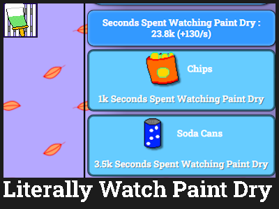

Grim
By ShirtDev
Released on 10/30/2022 / 5/29/2023
A goofy ahh game that will make you rethink life as a whole and slowly you will realize that everything exists to stop existing and the fact that you're a soulless heartless monster consumed by grief. You kill, but you can't stop killing, you know you have to stop but every time you kill you get a push of adrenaline only making you kill more and more because you're addicted to it and you can't stop because you're nothing but a greedy monster.
Direct Link (Newer) - https://orteil.dashnet.org/igm/?g=DAeAdbRN
Direct Link (Older) - https://orteil.dashnet.org/igm/?g=p4k407nU
Direct Link (Older Broken) - https://orteil.dashnet.org/igm/?g=sqAVVs42
Related Games
Two other games launched with Grim. Pages for them will be placed here when they are created.
Game Details
Note: This will be a long one. Also, any discord message links will require you to be in the DashNet sever with your discord account.
Grim is a game where you play as a grim reaper collecting souls from all over the universe. As you collect souls by clicking, you unlock various upgrades. It was released in Dashnet.
You may recognize Grim more for the joke status it gained in the community due to the insane delays and big promises. It's true! A lot of this game that made it so big isn't even within the game itself, but rather ShirtDev's history of promising an IGM game and not delivering. Grim's very long story starts all the way back to Evermagic in 2021.
Evermagic was announced on August 9th, 2021. It was Shirt's first original game under his Shirt alias meant to be released in 5 chapters focusing on story and magic. Chapter 1 was a tutorial, with 2 and 3 focusing more on rolling the plot having 3 end in a cliffhanger.
Chapter 1 was set to release in September 10th, 2021, with Chapter 2 releasing in November 11th, 3 releasing in the following January on the 28th, and 4/5 having no set dates. While the beta released on August 16th (this beta no longer exists), the game would be delayed to an unknown date the next day (although the 10th was still used). Around this time, two other games were being anticipated in the community, Bitcoin Empire by efficacy and Get a Glass of Milk Because You Have To by Agentperson (now known as Rylie Eric), one also delayed to an unknown date and the other delayed by 5 hours (as a joke).
Evermagic continued development, with sprites being posted on the igm channel on DashNet at the time, before getting a swift cancellation on August 19th due to stress related to it. Shirt commented "I tried and i have realised igm is not for me" (DashNet message link). Shirt would uncancel Evermagic before cancelling it for good.
Shirt would go on to make or contribute to other IGM games and one comic (some of which may or may not have pages here). Most didn't go anywhere. Some did, like Snowy Evening, but most didn't
2022
The first signs of Grim (titled Grim Clicker) would appear on April 2nd, 2022, with a simple "Become the grim reaper!" and active insults for murder using the quotes feature (this didn't end up in the final game). Discussion on the game happened with various aspects being shown such as the Knife building, the main character's three different personalities, and the "skull of" items. The plot at this time was about being choosen to be a grim reaper instead of going to heaven or hell. While most reapers crack, you end up killing so many people to the point where one of the personalities (a father voice) critizes you for it.
A pre-alpha version of Grim can be accessed here.
On April 5th, a teaser was dropped titled "The Black Sun" with Grim Clicker's release date being April 20th. The pre-alpha would continue to be updated as well. The next day, Grim would be delayed to the 22nd because of a Netflix show called Heartstopper being released on that day. More details and teasers were dropped throughout April.
On April 15th, in order to flesh out the game, a 2nd version was announced to feature "way more buildings, upgrades and story included in the second version will be a new design to EVERYTHING to make Grim clicker stand out from the crowd" (DashNet message link). It was set to release in late August/early September with the 1st version still having an April 22nd release date.
The 1st version got delayed to the 30th with another teaser dropping on the same day. It was then delayed again to an unknown date.
Grim Clicker would be inactive until July 1st, where Shirt's pc being fixed allowed for him to start working on it again. A release date was set to be given in 2 weeks. More teasers in the form of game code were dropped until the 10th when a new art teaser with a July 22nd release date would be dropped.
On July 22th, we would finally get Gri- oh wait, it didn't happen. On the 29th, Shirt acknowledged the missing game, which will be the last message in the old IGM channel on DashNet. This is the 5th delay overall.
On September 22nd, a thread would be created in the new IGM channel with the description provided above. A beta will later be announced for a December release before being pushed foward to the next 7 days after October 22nd before being pushed back to Ocotber 31st before being pushed foward to the 28th before being pushed back to the 31st before being pushed foward to the 30th. On the 30th, Grim was finally released as beta 0.8 with 0.9 coming in November.
On November 8th, Shirt would reveal release dates for four updates: November 11th (represented by a sword and called the Fighters Update), November 25th (represented by a pyramid and called the Rebirth Update), December 9th (represented by a burning cross), and December 23rd (reprsented by a Santa hat). On the 12th, the first two updates were combined into one update for the 25th.
On the 16th, all development would get paused as Shirt lost his drawing pen, meaning no art for the updates. The pen would get found on the 21st and some items for the second 0.8 update were dropped on the same day. Later on the 23rd, the 0.8 update was slated for a release on the 30th with three new systems being items, fighters, and quality, as well as other changes. It is unknown if this update happened or was delayed.
On December 11th, the 0.9 update was announced to be delayed due to lore, though it was set to release in December. On the 21st, he announced that it would hopefully release by the end of the week. This does not happen.
The game was slowly taking a more religious direction as the game kept getting delayed. Reasons for this are unknown.
Note that going foward, these details will be discussing religion, mainly christianity, in the context of this game.
2023
On January 2nd, an update was announced to come out in 4 days with more teaser art featuring new protagonist Gabriel. Two more teasers got dropped before being delayed again on the 6th due to bugs. On the 8th, the bugs were still not fixed, having gone "woowjoj" (DashNet message link).
On the 13th, Shirt said "Grim doesn't exist" (DashNet message link) before changing his mind ten days later on the 23rd. On the same day, another teaser was dropped, with the seven deadly sins listed in front of a cross, and the current version at the time got deleted.
An icon from the game was dropped on the 29th, mainly focusing on how red it is.
On February 2nd, the thread got renamed to Baked before being renamed to Caked a day later. Shirt then announced the Caked game. It was then renamed back to Grim on the 4th as Shirt gained motivation to work on it again. A beta build of Caked would drop alongside Grim when it later got released again.
On the 8th, in response to a message from someone, he revealed that he was currently on a break. This break ended on the 12th with more art teasers represents 5 of the 7 sins dropping a day later. He then got sick, affecting the "non-existant production of the game" (DashNet message link).
Two more teasers were dropped, one of the big button and the other of the main antagonist. On the 25th of February, the rerelease was announced for March. Around this time, the game would start gaining its infamous status for being insanely delay, mainly with jokes or asking for a link to the game from community members.
